Android Developer
A brilliant Android application developer with 3+ years of software development experience in the working field. Have a strong mobile application development background with solid understanding of the full mobile development life cycle. Experienced open source library such as butterknife, realm, .. Dedicated to continuously discovering, evaluating, and implementing new techonogies to maximize development efficiency and self-improvement of knowledge of the field.
Experiences
- Developed and Maintained Android Native app. and Web app.
- Management CJ Korea Express, E&M AIM and E&M STORY
- Acquired Android application programming skills
- Released on google Play per month with amendments
- Participated mobile projects as an Android developer
- Developed TMS, Mobile SDK Library and CJ Wellness
- Used open API such as OKhttp, Realm, Butterknife, ... etc
- Took charge of Google Analytics
- Applied Google Analytics on Android applications that I managed
- Guided all employees who are Android developer on how to set Google Analytics on Android application
- Undertook Mobile Application Accessibility
- Completed education of mobile application content accessibility guide, assessment and production techniques from NIA(National Information Society Agency)
Projects
It is CJ Korea Express that users can search parcel's location of any company in Korea.
Downloaded by more than 1,200,000
- Developed and Maintained
- Skills : Android, Fabric, GCM, BCR
 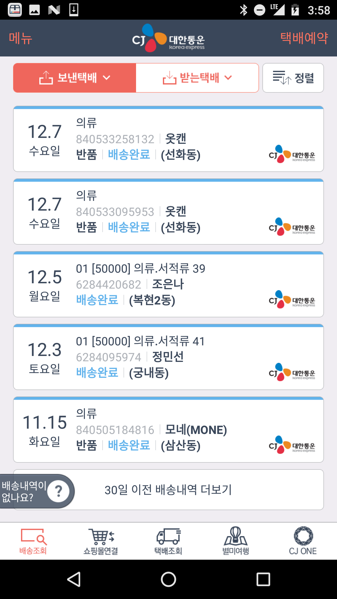 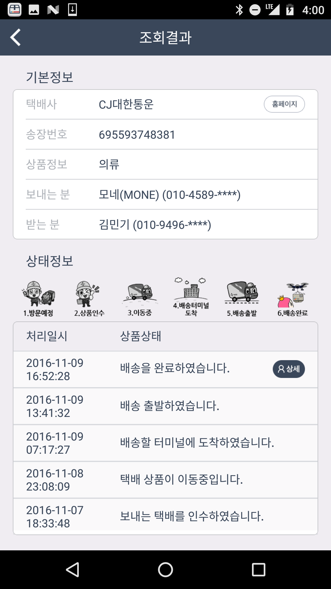 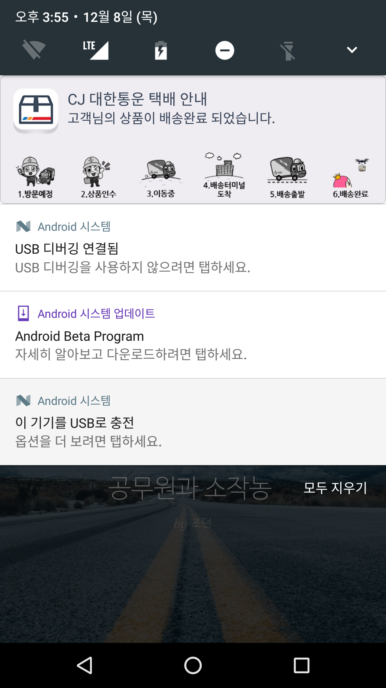
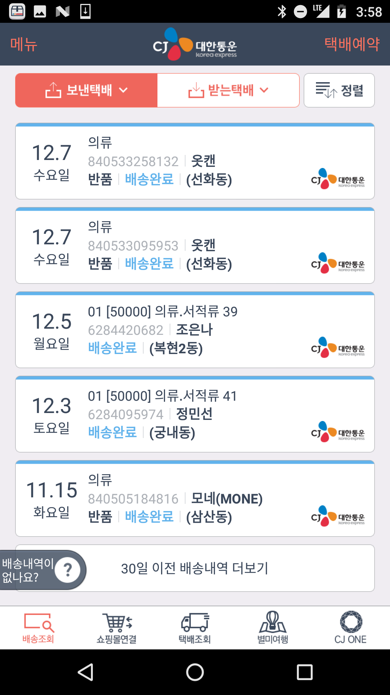 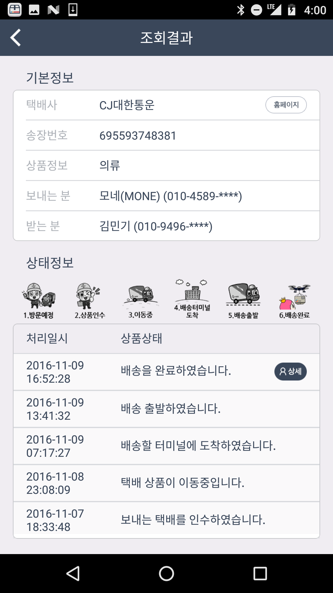 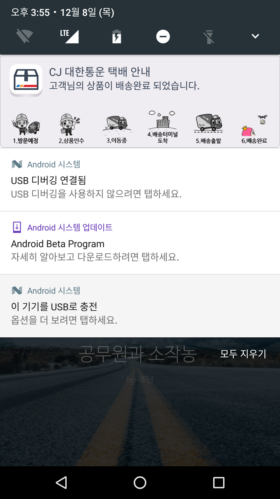 It is Web application and the service to recommend suitable influencers for advertisements to sponsors
- Developed and Maintained
- Skills : Android, GCM
 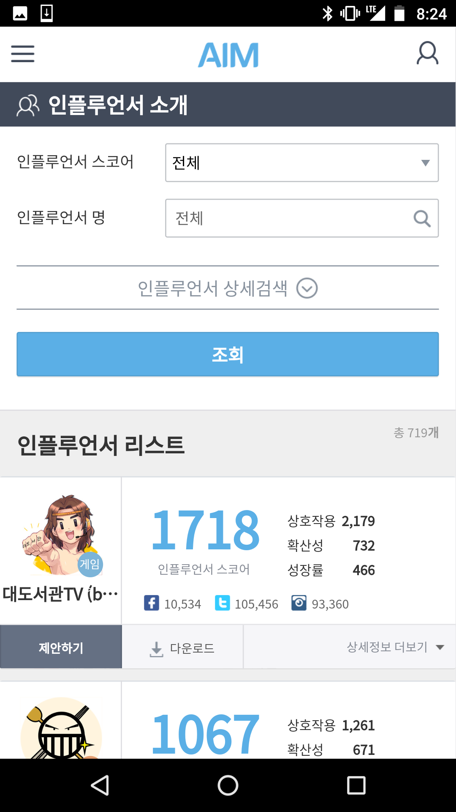
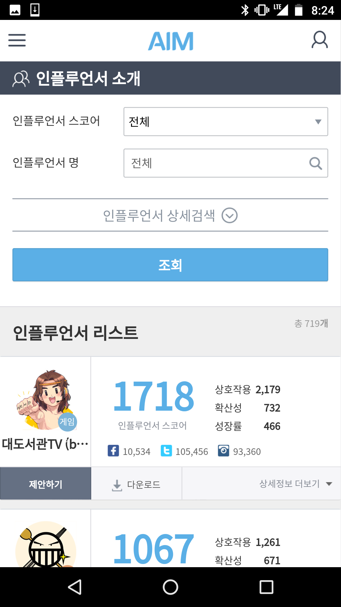 It is Web application and the service to give information about E&M TV show programs and contents
- Developed and Maintained
- Skills : Android, GCM
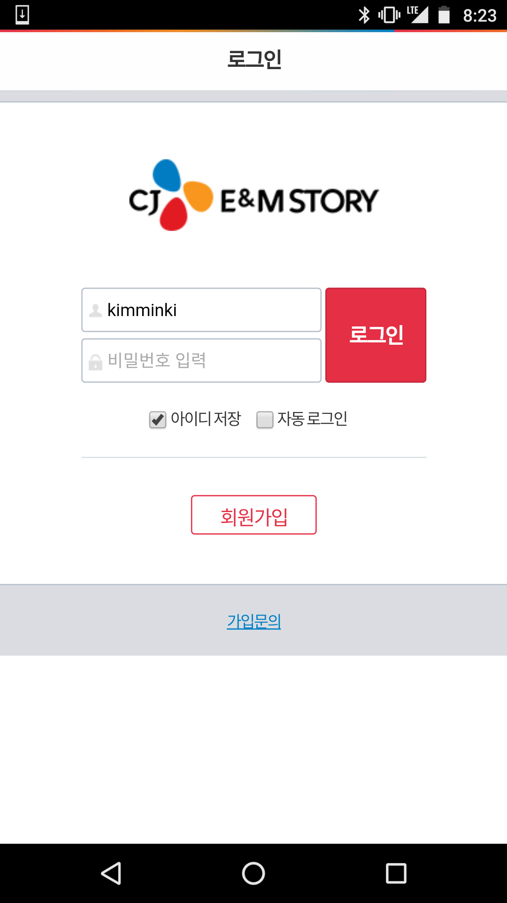 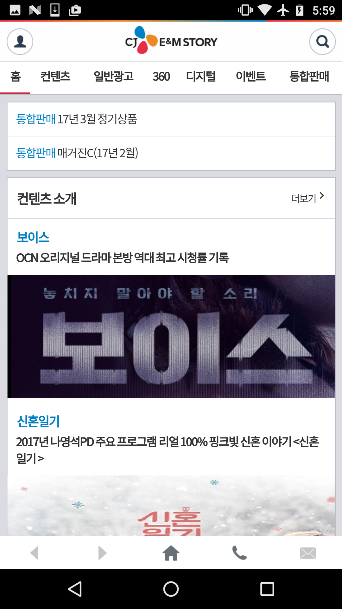
It supports deliverer to manage their parcles
- Team Work
- Skills : Android
- Role : login page, list page
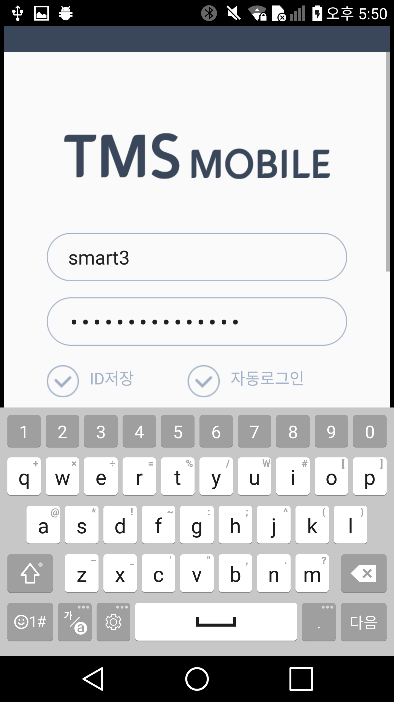 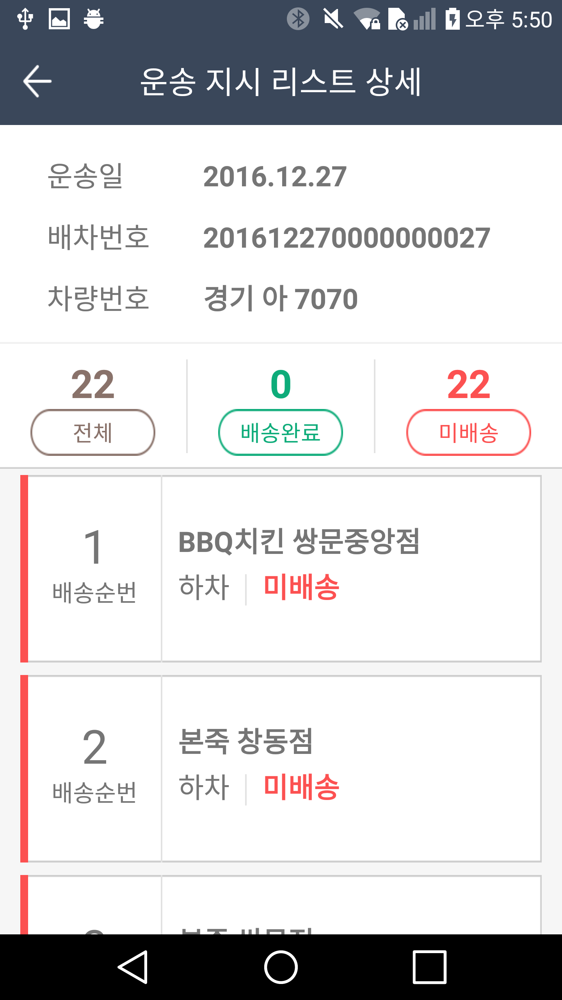
It is Mobile Library for using in mobile projects.
- Awarded Technical Innovation in the company
- Team Work
- Skills : Android, Realm, Glide, Naver Map API, Google Map API.
- Role : Created Database Helper, Image Manager and Map Helper
It is a treadmill Android application.
- Team work
- Skills : Android, HelloChart, JSON parsing and dynamic xml layout design
- Role : Created animated line chart graph on main screen.
Developed dynamic layouts that outputs calories that user is burning, graduents and speedneed to get.
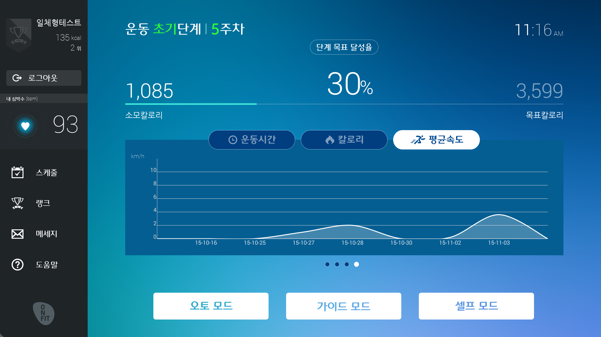 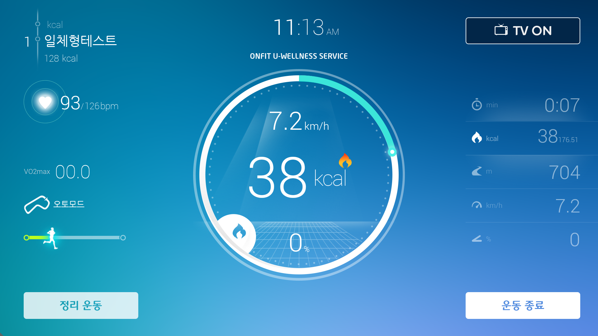
It is service to report all error messages from other applications that the company managed.
It is enable to send the messages to the person in charge by email and set a period of reporting.
- Solo work
- Skills : Android, UrQA
Managers can control user's ONESTER level using ONESTER MAKER. After inquiry user's ID, the ONESTER's level can be controled through server-client networking servieces
- Solo work
- Skills : Android, http-client Networking
Previous Experiences
- Built a JAVA program using UI automator.
- Assisted in collecting data for how to test in Android application.
- Participated an instant team as an engineer.
- Experienced whole process of application from planning application service to creating prototype.
- Created Android application prototype in the instant team.
UIAutomator program
- - Solo work. Skills : JAVA, UIAutomator.
It is enable to auto user-test for all applications that SK Planet managed.
- Reported bugs and improvement points found during black-box testing to reflect security software product.
- Award for BUG-KING for finding the most errors and bugs of new security software product.
- Completed test case lists and created user manual for new security software product.
- Developed spontaneously Auto-it script prorgram that assists to test
Auto-it program
- - Solo work. Skills : Auto-it Script
It assists to test security program and is able to install viruses, generate imaginary network attack, run keylogger and access web pages that can infect computer in carious browser.